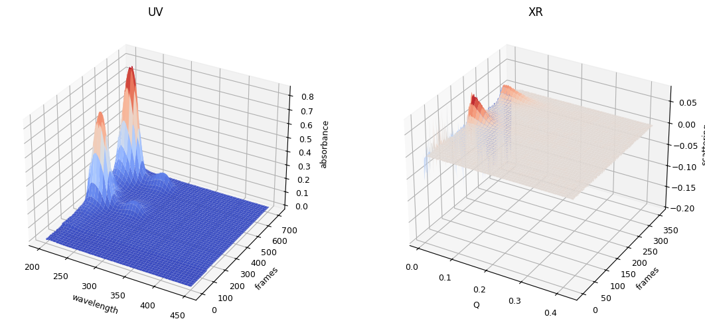
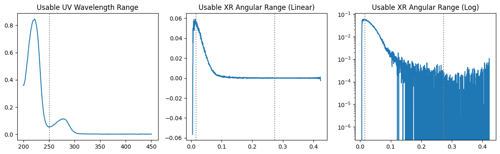

import sys
sys.path.insert(0, r"D:\PyTools\pytools-3_3_8-develop\lib")
import numpy as np
import matplotlib.pyplot as plt
1.2 Data Trimming#
Study Points#
Moment
ssd.get_flowchange_points()
ssd.get_usable_wrange()
ssd.get_usable_qrange()
ssd.get_trimming_info()
ssd.copy()
from MolassLib.DataObjects import SecSaxsData as SSD
ssd = SSD(r"D:\PyTools\Data\sample_data")
ssd.plot_3d();

1.2.1 Trimming in Elution Axis#
1.2.1.1 Trimming by Moment#
from MolassLib.Stats import Moment
xr_icurve = ssd.xr.get_icurve()
uv_icurve = ssd.uv.get_icurve()
x = xr_icurve.x
y = xr_icurve.y
mt = Moment(x, y)
mean, std = mt.get_meanstd()
fig, (ax1,ax2) = plt.subplots(ncols=2, figsize=(10,4))
ax1.set_title("Original Data")
ax2.set_title(r"2$\sigma$-Trimmed Data")
ax1.plot(x, y)
wanted_range = np.logical_and(mean-2*std < x, x < mean+2*std)
ax2.plot(x[wanted_range], y[wanted_range])
for p in [mean-2*std, mean-std, mean, mean+std, mean+2*std]:
for ax in ax1, ax2:
ax.axvline(p, color='yellow')

mt.get_nsigma_points(2)
(103, 343)
1.2.1.2 Trimming by Flow Change#
used only for data measured with flow rate changes
points = ssd.uv.get_flowchange_points()
points
((135, None), None)
def plot_flowchange_trimming(ax, in_folder):
ssd = SSD(in_folder, uv_only=True)
points, judge_info, (c1, c2) = ssd.uv.get_flowchange_points(return_also_curves=True)
ax.set_title(in_folder)
ax.plot(c1.x, c1.y)
for k in points:
if k is not None:
ax.axvline(c1.x[k], color='cyan')
fig, (ax1,ax2) = plt.subplots(ncols=2, figsize=(10,4))
plot_flowchange_trimming(ax1, r"D:\PyTools\Data\sample_data")
plot_flowchange_trimming(ax2, r"D:\PyTools\Data\20161104\BL-6A\AhRR")

1.2.2 Trimming in Spectral Axis#
# ssd from sample_data
fig, (ax1,ax2,ax3) = plt.subplots(ncols=3, figsize=(15,4))
ax1.set_title("Usable UV Wavelength Range")
i, j = ssd.uv.get_usable_wrange()
k = np.argmax(uv_icurve.y)
uv_jcurve = ssd.uv.get_jcurve(j=k)
ax1.plot(uv_jcurve.x, uv_jcurve.y)
for n in i, j:
if n is not None:
ax1.axvline(uv_jcurve.x[n], ls=":", color='gray')
ax2.set_title("Usable XR Angular Range (Linear)")
ax3.set_title("Usable XR Angular Range (Log)")
ax3.set_yscale('log')
i, j = ssd.xr.get_usable_qrange()
k = np.argmax(xr_icurve.y)
xr_jcurve = ssd.xr.get_jcurve(j=k)
for ax in ax2,ax3:
ax.plot(xr_jcurve.x, xr_jcurve.y)
for n in i, j:
if n is not None:
ax.axvline(xr_jcurve.x[n], ls=":", color='gray')

1.2.3 Trimming Utility#
from MolassLib.Global.Options import set_molass_options
set_molass_options(flowchange=True)
tinfo = ssd.make_trimming_info()
ssd.plot_trimming_info(tinfo)
(<MolassLib.PlotUtils.PlotResult.PlotResult at 0x2196722c0b0>,
<MolassLib.Trimming.TrimmingInfo.TrimmingInfo at 0x219673ef830>)
1.2.4 Trimmed Copy#
making deep copies
entire_ssd = ssd.copy()
trimmed_ssd = ssd.copy(xr_slices=tinfo.xr_slices, uv_slices=tinfo.uv_slices)